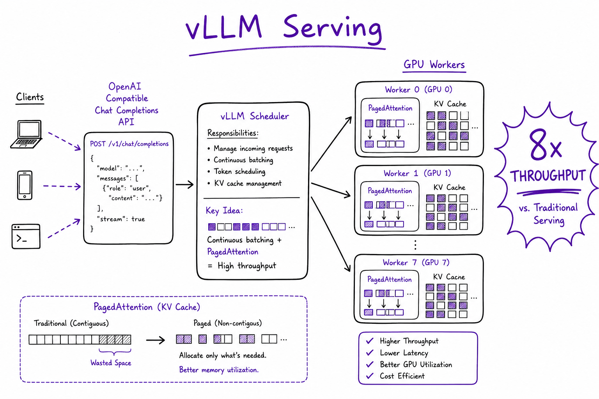
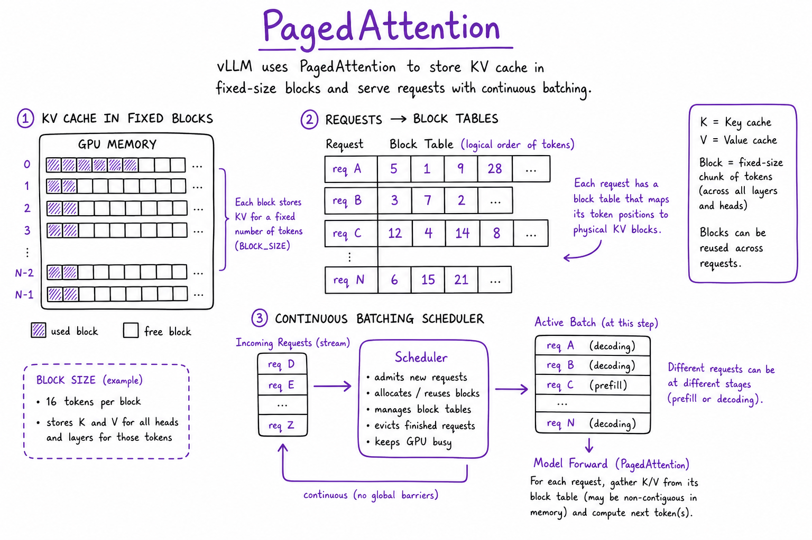
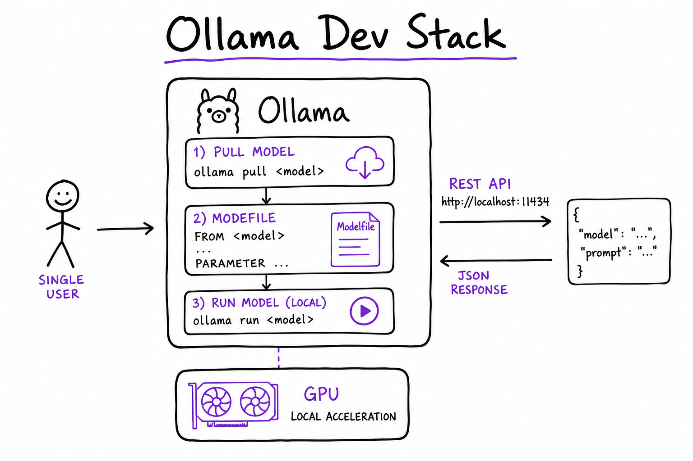

Model Serving (vLLM / Ollama) // AI Tech
Serve open-weight LLMs locally: vLLM for production GPU throughput (PagedAttention, continuous batching, OpenAI-compatible API), Ollama for laptop dev and quick pulls, quantization (AWQ/GPTQ), GPU sizing, and hybrid routing with cloud APIs.

vLLM serving: OpenAI-compatible /v1/chat/completions → scheduler → PagedAttention KV cache → GPU workers. 5–20× throughput vs naive HuggingFace generate on same hardware for RAG and agent workloads.
01 — What & Why
Self-host Llama, Mistral, Qwen when data residency, cost at scale, or predictable latency beat closed APIs. vLLM is the production inference engine; Ollama is the developer UX layer for local iteration. Both expose OpenAI-shaped APIs so LangChain/LangGraph code swaps with a base_url change.
Functional requirements
- Chat completions with streaming tokens
- Concurrent requests with batching (not one-at-a-time)
- Tool calling / JSON mode for agent graphs
- Configurable context length and temperature per model
- Embeddings served separately via TEI (not vLLM)
Non-functional requirements
- Throughput: maximize tokens/sec per GPU via continuous batching
- Memory: fit model weights + KV cache in VRAM (quantization helps)
- Latency: TTFT < 500 ms; streaming for UX
- Availability: health checks, rolling deploy, queue depth autoscale
Not for embeddings: use TEI for embedding models. vLLM is LLM generation only.
01a — Core Concepts
| Term | Definition | Gotcha |
|---|---|---|
| PagedAttention | KV cache stored in non-contiguous fixed blocks | vLLM core; reduces fragmentation |
| Continuous batching | Add/remove requests mid-forward-pass | vs static batching in naive HF |
| Prefix caching | Reuse KV blocks for identical prompt prefixes | Big win for shared RAG system prompts |
| AWQ / GPTQ | 4-bit weight quantization | ~1–3% quality loss; 4× memory savings |
| Tensor parallel (TP) | Split layers across GPUs | --tensor-parallel-size 2 for 70B |
| OpenAI compat | /v1/chat/completions schema | Point SDK base_url at vLLM |
| Modelfile | Ollama config for system prompt + params | Dev convenience; not prod multi-tenant |
01b — API / Interface Surface
# Start vLLM OpenAI server
python -m vllm.entrypoints.openai.api_server \
--model meta-llama/Llama-3.1-8B-Instruct \
--tensor-parallel-size 1 \
--gpu-memory-utilization 0.9 \
--max-model-len 8192 \
--enable-prefix-caching
# Client — identical to OpenAI SDK
from openai import OpenAI
client = OpenAI(base_url="http://gpu-host:8000/v1", api_key="dummy")
stream = client.chat.completions.create(
model="meta-llama/Llama-3.1-8B-Instruct",
messages=[{"role": "user", "content": "Summarize RAG in 3 bullets"}],
stream=True,
)
# Ollama — local dev
# ollama pull llama3.1
# ollama run llama3.1
# curl http://localhost:11434/api/chat -d '{"model":"llama3.1","messages":[...]}'
| Endpoint | Engine | Use |
|---|---|---|
/v1/chat/completions | vLLM, Ollama | Chat + agents |
/v1/completions | vLLM | Legacy completion |
/v1/models | vLLM | Health / model list |
/embed | TEI | Embeddings (separate service) |
02 — When to Use / When NOT
| Case | Self-host? | Alternative |
|---|---|---|
| Data cannot leave VPC | vLLM | Azure OpenAI private |
| Laptop prototype / demo | Ollama | OpenAI API for speed |
| High QPS, 8B–70B open models | vLLM cluster | Closed API $/token at scale |
| Frontier reasoning (GPT-4o, o1) | No | Cloud API still wins quality |
| Hybrid router | vLLM + OpenAI | Easy queries local; hard to cloud |
03 — Architecture
+------------------+
| API Gateway |
| (auth, routing) |
+--------+---------+
|
+-----------+-----------+
v v
+-------------+ +-------------+
| vLLM rep 1 | | vLLM rep 2 |
| GPU A10 | | GPU A10 |
+------+------+ +------+------+
| |
+-----------+-----------+
v
+------------------+
| Model weights |
| + KV cache RAM |
+------------------+04 — vLLM Deep Dive

PagedAttention: KV cache split into fixed-size blocks with block table (like OS virtual memory); continuous batching scheduler adds new requests without waiting for batch completion.
Key flags for production RAG:
--enable-prefix-caching # shared system prompts --max-model-len 8192 # cap KV RAM; lower if OOM --gpu-memory-utilization 0.9 --tensor-parallel-size 2 # 70B across 2 GPUs --quantization awq # 4-bit weights
- Prefix caching: identical RAG system prompt + tool defs cached across users
- Speculative decoding: draft model + verify (advanced latency win)
- Structured output: guided JSON for tool calls
05 — Ollama Deep Dive

Ollama stack: ollama pull → Modelfile (SYSTEM, PARAMETER temperature) → ollama serve :11434 → REST /api/chat. Single-user GPU; not multi-tenant production.
# Modelfile example FROM llama3.1 SYSTEM You are a helpful support bot. Cite sources. PARAMETER temperature 0.2 PARAMETER num_ctx 8192 # ollama create support-bot -f Modelfile # ollama run support-bot
Use Ollama for: local LangGraph dev, CI smoke tests, sales demos. Do not use for multi-tenant SaaS prod — no HA, queue, or autoscale story.
06 — Quantization
| Method | Bits | VRAM (8B) | Quality |
|---|---|---|---|
| FP16 | 16 | ~16 GB | Baseline |
| AWQ / GPTQ | 4 | ~5–6 GB | ~1–3% task loss |
| FP8 | 8 | ~8 GB | Minimal loss on H100 |
Always benchmark on your eval harness before prod quant deploy. Perplexity alone is insufficient — run golden RAG/agent tasks.
07 — GPU Sizing
| Model | Precision | GPU | Notes |
|---|---|---|---|
| Llama-3-8B | FP16 | 1× A10/L4 24GB | Headroom for KV cache |
| Llama-3-8B | AWQ 4-bit | 1× T4 16GB | More concurrent users |
| Llama-3-70B | AWQ | 2× A100 80GB (TP=2) | tensor parallel required |
KV cache RAM scales with max_model_len × concurrent_requests. OOM usually from context too long, not weights.
08 — vLLM vs Ollama
| Dimension | vLLM | Ollama |
|---|---|---|
| Target | Production GPU cluster | Local dev / demo |
| Throughput | Very high (continuous batch) | Moderate (single user) |
| Setup | Docker/K8s, flags tuning | ollama pull |
| Multi-tenant | Yes with LB + replicas | No |
| OpenAI API | Full compat | Similar /api/chat |
| Observability | Prometheus metrics | Minimal |
09 — Full Client Example
Point LangChain / OpenAI SDK at vLLM for a RAG generation node. Embeddings still go to OpenAI or TEI per Embedding Models.
from openai import OpenAI
from langchain_openai import ChatOpenAI
from langchain_core.messages import HumanMessage, SystemMessage
# Direct OpenAI SDK against vLLM
vllm = OpenAI(base_url="http://gpu-cluster:8000/v1", api_key="dummy")
def generate_answer(query: str, context_chunks: list[str]) -> str:
context = "\n\n".join(f"[{i+1}] {c}" for i, c in enumerate(context_chunks))
resp = vllm.chat.completions.create(
model="meta-llama/Llama-3.1-8B-Instruct",
messages=[
{"role": "system", "content": "Answer using only the context. Cite [n]."},
{"role": "user", "content": f"Context:\n{context}\n\nQuestion: {query}"},
],
temperature=0.2,
max_tokens=512,
stream=False,
)
return resp.choices[0].message.content
# LangChain — same base_url swap for LangGraph nodes
llm = ChatOpenAI(
model="meta-llama/Llama-3.1-8B-Instruct",
openai_api_base="http://gpu-cluster:8000/v1",
openai_api_key="dummy",
temperature=0.2,
)
# Ollama dev equivalent
# llm = ChatOpenAI(model="llama3.1", openai_api_base="http://localhost:11434/v1", ...)
Enable prefix caching on vLLM when system prompt + tool defs are identical across users. Monitor TTFT and tokens/sec in LangSmith.
10 — Production & Ops
| Concern | Practice |
|---|---|
| Health | GET /v1/models; readiness when model loaded |
| Autoscale | HPA on GPU queue depth + p99 TTFT; min replicas >0 |
| Deploy | Rolling drain; warm model load ~1–3 min |
| Routing | Gateway: easy → local 8B; hard → GPT-4o cloud |
| Tracing | LangSmith: log model name, tokens, latency per request |
| Security | Network isolate GPU nodes; no public ingress |
11 — Where It Shows Up
- OpenAI API Patterns — same SDK with
base_urlswap - Embedding Models — TEI for embed; vLLM for generate
- LangGraph — ChatOpenAI pointed at vLLM for agent loops
- RAG End-to-End — generation node after retrieve+rerank
- LLM Observability — token/cost/latency per model replica
12 — Common Pitfalls
- Ollama in prod multi-tenant — no SLO, queue, or HA story
- OOM from max-model-len too high — lower len or reduce concurrent requests
- No batching / single-thread HF — 5–20× throughput left on table
- vLLM for embeddings — use TEI instead
- Skip quant eval — deploy AWQ without task benchmark
- Cold start on scale-to-zero — first request 60s+ model load